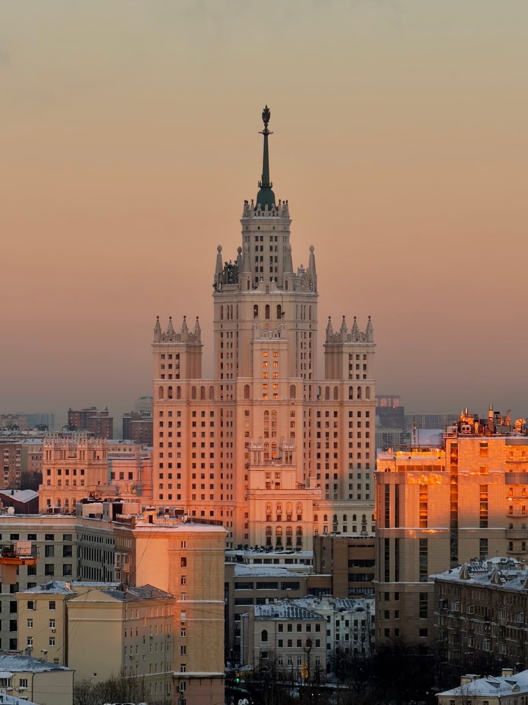

Статьи
Легально ли гулять по крышам Москвы: как устроены официальные прогулки
Короткий ответ: да — если подниматься по договорённости с площадкой и с сопровождающим. Разбираем, чем такой формат отличается от самовольного залаза.
Почему этот вопрос вообще возникает
Крыша жилого дома — закрытая территория: за неё кто-то отвечает, и двери на чердак заперты не просто так. Подняться туда без разрешения — через случайно открытую дверь или сломанный замок — значит оказаться на чужой закрытой территории, а самовольный доступ может обернуться проблемами с законом: встречей с охраной, вызовом полиции, неприятным разбирательством. К тому же обычная крыша не рассчитана на прогулки: скользкие покрытия, неогороженные края, темнота на лестнице.
Поэтому на вопрос «законно ли гулять по крышам» честный ответ такой: зависит не от крыши, а от того, как вы на неё попали. Легальные крыши Москвы — это не тайный список адресов, а формат доступа: подъём по договорённости с площадкой и в сопровождении человека, который за эту площадку отвечает.
Чем организованная прогулка отличается от залаза
Со стороны разница кажется небольшой — и там и там вы стоите над городом. На деле отличается всё: от того, кто открывает дверь, до того, что происходит, если меняется погода или планы.
Договорённость с площадкой
Организованная прогулка проходит по договорённости с теми, кто отвечает за конкретную крышу. Вас там ждут: дверь открывают для вас, а не вы её «находите». Именно согласованный доступ и делает формат легальным — не особый статус здания и не удачное стечение обстоятельств.
Сопровождающий и инструктаж
На площадке вы не одни. Сопровождающий встречает вас у дома в назначенное время, поднимается вместе с вами и перед выходом на крышу коротко объясняет правила: где можно ходить, где стоит быть аккуратнее, как не мешать жителям. Маршрут проверен заранее, поэтому всё проходит спокойно — без «идём быстро, пока никто не видит».
Адрес — после подтверждения записи
Адреса крыш мы заранее не публикуем: точное место встречи сообщаем после подтверждения записи. Это не интрига ради интриги, а часть договорённости с площадками — так на крыши не приходят без сопровождения. При этом выбирать есть из чего ещё до записи: в каталоге у каждой локации есть фотографии с точки и станция метро — Фили, Киевская, Курская, Марксистская, Новокузнецкая, Римская, Таганская или Шелепиха.
Как выглядит официальная экскурсия на крышу
Формат простой. Вы выбираете крышу в каталоге — всего их десять, с видами на Кремль, сталинские высотки, Москва-реку и башни Москва-Сити. Оставляете заявку на сайте или пишете в Telegram-бот, мы подтверждаем время и присылаем детали встречи. В назначенный час встречаетесь с сопровождающим, поднимаетесь, слушаете короткий инструктаж — и дальше час над городом ваш: фотографируйте на телефон или приходите со своим фотографом, смотрите закат, разговаривайте. Про сам формат и виды мы подробно рассказываем на странице про экскурсии по крышам Москвы, а пошаговый разбор записи — в гиде «Как попасть на крышу в Москве».
Что можно на площадке — и чего лучше не делать
Организованный формат — это не музей с верёвочками. Наверху спокойно фотографируют, встречают закат, разговаривают, приходят вдвоём или небольшой компанией. Правила простые: не перегибаться через край, ничего не бросать вниз, не шуметь в подъезде и на площадке — под крышей живут люди. Сопровождающий проговаривает это за пару минут, дальше вы просто гуляете.
Частые заблуждения
Вокруг крыш накопилось несколько мифов — из-за них вопрос про легальность и возникает снова и снова.
- «Если дверь открыта — значит, можно». Нет: открытая дверь не делает чужую закрытую территорию общедоступной — точно так же, как открытый подъезд не приглашает в чужую квартиру.
- «Если тихо и быстро, ничего не будет». Может, и не будет. А может — охрана, полиция и испорченный вечер. Угадывать необязательно, когда есть формат без этих рисков.
- «Легально — значит скучно». Вид с крыши не зависит от того, как вы на неё попали. Разница лишь в том, что на организованной прогулке вы не вздрагиваете от каждого звука на лестнице.
Как отличить организованный формат от сомнительного
Несколько признаков, по которым понятно, что перед вами легальная прогулка, а не «залаз с проводником»:
- у встречи есть назначенное время и конкретный сопровождающий, а не «подходите, разберёмся на месте»;
- перед выходом на крышу проводят инструктаж, а не просят идти тихо и быстро;
- не нужно никуда перелезать, протискиваться и прятаться от жителей дома;
- условия названы заранее: длительность, стоимость, правила на площадке;
- на вопросы отвечают прямо — что видно с точки, как проходит подъём, что будет, если испортится погода.
Если же вас зовут «на секретную крышу» без времени, без правил и с просьбой не шуметь на лестнице — это тот самый самовольный доступ, просто за деньги. Риски в нём никуда не деваются.
Сколько стоит легальная прогулка
Ориентир — от 2000 ₽ за человека. Базовая длительность — 1 час; если площадка свободна, прогулку можно продлить ещё на час за 500 ₽ с человека. Точные цены по конкретным крышам динамические, их показывает Telegram-бот. Если прогулку хочется подарить, учтите: подарочные сертификаты мы не выпускаем — вместо этого можно согласовать прогулку-сюрприз через тот же Telegram-бот.
Коротко
Гулять по крышам Москвы можно спокойно, если это организованная прогулка: доступ согласован с площадкой, рядом сопровождающий, правила объяснены заранее. Самовольный подъём на закрытую территорию — другой жанр: он небезопасен и может обернуться проблемами с законом. Остались вопросы про формат — загляните в FAQ или напишите в Telegram-бот.
FAQ
Частые вопросы
Законно ли гулять по крышам Москвы?
Да, если подъём организован: доступ согласован с площадкой, рядом сопровождающий, перед выходом на крышу проводят инструктаж. Самовольный доступ на закрытую территорию — другое дело: он небезопасен и может обернуться проблемами с законом.
Чем официальная экскурсия на крышу отличается от «залаза с проводником»?
У организованной прогулки есть назначенное время, сопровождающий, инструктаж и заранее названные условия: длительность, стоимость, правила на площадке. Если вас просят идти тихо, прятаться и никому не попадаться — это не организованный формат.
Почему адрес крыши сообщают только после записи?
Так устроена договорённость с площадками: адреса не публикуются, чтобы на крыши не приходили без сопровождения. Точное место встречи сообщаем после подтверждения записи, а виды с каждой локации можно заранее оценить по фотографиям в каталоге.
Над городом